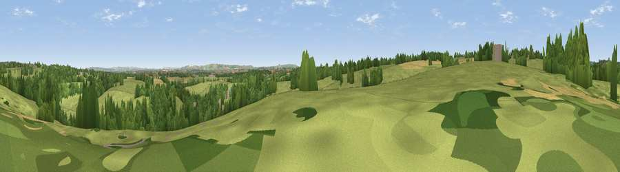

Viewpoint near Farleigh Hungerford
#30658 in England · top 56% of its area beats it · near Farleigh HungerfordThe view, rendered

A 360° render of this exact spot computed from the terrain model, tree cover and land cover — summer colours, afternoon light, calibrated against photographs of famous viewpoints. Real trees, hedges and buildings will differ in detail.
The panorama
Grey silhouette: terrain skyline in each direction (720 bearings, Earth curvature and refraction included). Dashed green: skyline with trees (+15 m) and buildings (+8 m) as obstacles. Blue strip: how far the ground is visible on each bearing.
Where the view opens
Wedge length = distance to the farthest visible ground on that bearing (vegetation-aware). Rings at 10, 25 and 50 km.
What fills the view
65% grassland · 26% woodland · 7% cropland · 1% built-up
Angular shares of the visible panorama (visual magnitude), not map area. Landscape diversity 0.38 (0–1 Shannon).
Key numbers
More beautiful places nearby
The staircase of upgrades: each row has a higher view potential than everything closer. Driving times are estimates from straight-line distance, calibrated against real road routing — check an actual route before setting out.
| Place | Direction | Drive | Score |
|---|---|---|---|
| Viewpoint near Westwood | NE · 2 km | ~6 min | 45.7 |
| Viewpoint near Wingfield | SSE · 2 km | ~6 min | 45.8 |
| Viewpoint near Winsley | NNE · 3 km | ~6 min | 46.3 |
| Viewpoint near Limpley Stoke | NW · 3 km | ~8 min | 60.8 |
| Viewpoint near Combe Hay | WNW · 8 km | ~16 min | 66.1 |
| Viewpoint near Inglesbatch | WNW · 9 km | ~18 min | 68.8 |
| Viewpoint near Westbury | SE · 12 km | ~22 min | 71.3 |
| Viewpoint near Bratton | ESE · 12 km | ~23 min | 73.2 |
51.32096, -2.29377 · source: screening · position refined by local search. Computed location — check access rights before visiting.